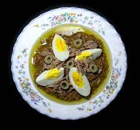

Slata Mechouia

Slata Mechouia is a tunisian traditional salad made from grilled vegetables.
Ingredients
- Green pepper
- Tomato
- Onion
- Garlic
- Olive oil
- Spices
Cooking tips
- If you prefer a non-spicy version of this dish, simply omit the chili in your Roasted Vegetable Mechouia salad.
- If your Mechouia is too dry, feel free to add more olive oil before serving.
- To make this recipe gluten-free, use certified gluten-free food products where possible. You can also use regular wheat bread for dipping instead of pita bread.